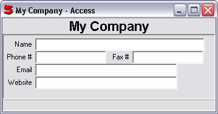

This control is meant to be used with queries with only a single record, e.g. tables with key(). Since there is only a single record, there are no navigation controls.
For example:
Window(#(Access1 mycompany
title: "My Company"
(Form
(name group: 0) nl
(phone group: 0) (fax group: 1) nl
(email group: 0) nl
(website group: 0)
)))
would create
Also see: AccessControl, Create an Access (Getting Started) .